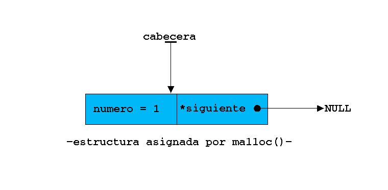

|
|
|
|
|
12.- Listas, colas y pilas (por el dr7tbien)
12.1.-Crear el primer elemento de una lista (por el dr7tbien)
12.2.-Añadir elementos a una lista (por el dr7tbien)
12.3.-Avanzar por los elementos de una lista (por el dr7tbien)
12.4.- Agregar elementos en una lista delante o detrás de otro apuntado por *indice (por el dr7tbien)
12.5.- Borrado de nodos en listas (por el dr7tbien)
12.6.- Desarrollo de un programa con lista simple (por el dr7tbien)
12.7.-Ordenamiento de la lista por orden alfabético ascendente. El concepto de doble puntero (por el dr7tbien)
12.8.- Listas circulares y doblemente enlazadas. Desarrollo de un programa con una lista doble (por el dr7tbien)
12.9.- Pilas y colas (por el dr7tbien)
 12.1.-Crear el primer elemento de una lista
12.1.-Crear el primer elemento de una lista
Hasta el momento hemos visto varias formas de guardar información, formas como arrays, ficheros en disco, estructuras, arrays de estructuras, etc. Si continuamos en el oficio de la programación en algún momento se nos planteará un problema parecido al siguiente. Supongamos que tenemos varias estructuras de datos almacenadas en un fichero en el disco y queremos ordenarlas por orden alfabético. El problema en un principio carece de complicación, pero si profundizamos en el enunciado, nos daremos cuenta que sería muy interesante conocer el número de estructuras almacenadas en fichero de datos, para así por ejemplo declarar un array de tantos elementos como estructuras tenga el fichero. Podríamos declarar un array de 100 elementos a estructuras, suponiendo que el fichero no contenga más de 100 elementos, y almacenar en dicho array las estructuras leidas del fichero. ¿Pero si el fichero tiene más de 100 elementos? ¡Comenzarían los problemas! Existen sistemas de almcanamiento dinámico en memoria llamados listas. Colas y pilas. Podríamos imginarnos una lista como un array de estructuras de datos cuyo límite es la memoria RAM del computador. Observa la siguiente estructura:
|
struct
datos |
Con el fin de que se vea un poquito más claro hemos simplificado la estructura que podría tener muchos más datos. Lo verdaderamente importante es la declaración struct datos *siguiente; Que es un puntero a una estructura de tipo 'datos' y a su vez esta última estructura apuntará a otra estructura de su mismo tipo. Para poner un límite a este encadenado de estructuras haremos que la últimma estructura apunte a NULL, con lo que ya sabremos el final de la lista. Llamaremos a cada variable de tipo struct datos nodo o eslabón. La declaración de la estructura que usaremos a partir de ahora será la mostrada a continuación y para declarar una variable estructura, lo haremos a través de un puntero a struct datos:
|
struct
datos struct
datos *nuevo_nodo; |
Para poder referirse a una lista hemos de saber por donde empezar a leerla, es decir, hemos declarado un puntero struct datos *cabecera de tal manera que este puntero siempre nos diga dónde comenzar a leer la lista. Para introducir datos en una estructura reservaremos espacio en memoria mediante malloc() y haremos que malloc() devuelva un puntero al espacio de memoria reservado:
|
cabecera =
(struct datos *)malloc(sizeof(struct datos)); |
Una vez hecha esta declaración, un esquema de la situación podría ser el siguiente:

Ya tenemos un comienzo de la lista.
|
|
|
|||